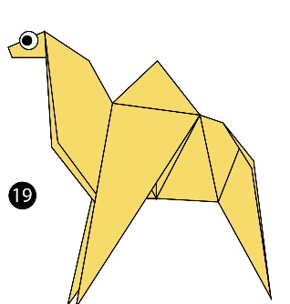
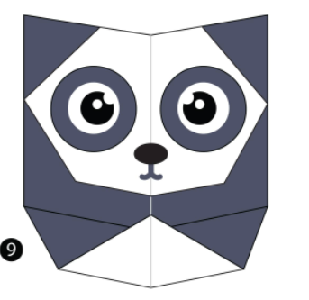

Here are some animals I made:
About Us

Cool facts about camels:
- There are two types of camels: One humped or “dromedary” camels and two humped Bactrian camels.
- Camels have three sets of eyelids and two rows of eyelashes to keep sand out of their eyes.
- Camels have thick lips which let them forage for thorny plants other animals can't eat.

Interesting panda facts:
- Giant pandas are good at climbing trees and can also swim.
- An adult panda can eat 12–38 kilos of bamboo per day.
- Pandas have carnivorous teeth, but they eat bamboo and fruit.